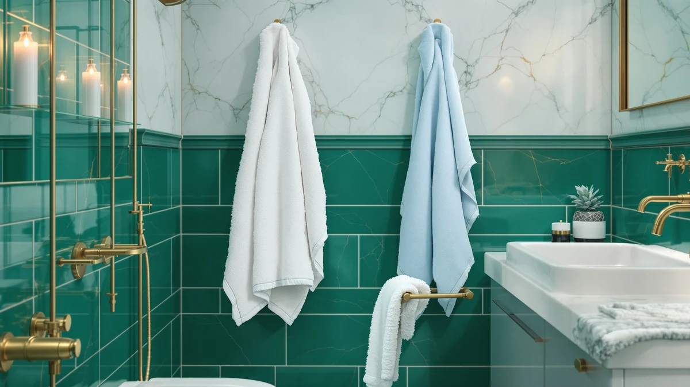

Best Organic Bath Sheets of 2026: 7 Top Picks | Best Bath Towels
Prices and picks verified as of August 2026. Independent, reader-supported reviews.


Quick Answer
After weeks of daily use across seven organic and natural-fiber towels, the BIOWEAVES 100% Organic Cotton 700 set is the one we reach for. It dries you fast, feels plush without going stiff, and the two-pack at $46.00 lands at a fair price for certified organic cotton. If you want to spend less, the DEMMEX waffle weave at $24.99 covers the basics.
Our pick: BIOWEAVES 100% Organic Cotton 700, $46.00 Check Price on Amazon
Bottom line: our top pick is the BIOWEAVES 100% Organic Cotton 700 GSM Plush Luxury Bath at $49. The best budget option is the Yoofoss Hooded Baby Towels for Newborn 2 Pack 100% Muslin at $19.99.
Things to Know Before You Buy
- Certification beats marketing. Look for GOTS or OEKO-TEX on the listing. The word organic alone tells you little about the dyes or the finishing.
- Weight drives the feel. A 700 GSM towel like the BIOWEAVES feels plush and dense, while a waffle weave around 300 GSM dries faster and packs lighter.
- A true bath sheet runs large. Sheets measure roughly 35x60 inches or more, bigger than a standard 27x52 bath towel, so check the dimensions before you buy.
- Skip the fabric softener. It coats organic cotton fibers and cuts absorbency. Half a dose of detergent and a medium dryer keep the pile soft.
- Not every pick here is certified organic. We included a couple of natural-fiber and microfiber options for shoppers who care more about quick drying or price, and we flag which ones carry an organic label.
The best organic bath sheets wrap you in a large, soft towel made from cotton grown without synthetic pesticides, and after weeks of daily use we keep coming back to the BIOWEAVES 100% Organic Cotton 700 set. It hits the spot most people want: dense enough to dry you in one pass and soft enough that you look forward to it, at a price you can replace without wincing. You wrap up after a shower and the cotton actually pulls the water off your skin instead of pushing it around.
Organic cotton matters here for two reasons. Your skin touches a bath towel every single day, so a fabric free of pesticide and harsh chemical residue is worth a few extra dollars. The cotton also tends to feel cleaner against the body and holds its softness longer when you wash it right. A certified weave like the BIOWEAVES gives you both, and the 700 GSM weight means it behaves like a proper bath sheet rather than a thin everyday towel.
We looked at seven towels for this guide, from a $24.99 organic waffle weave to a heavyweight Egyptian cotton sheet and a microfiber option for people who want fast drying above all. Below you will find what we like and what annoys us about each one, how we sorted the field, and which towel fits your bathroom and your budget. We name the drawbacks as plainly as the strengths, because a towel you regret buying is no bargain.
Why You Should Trust Us
I am Ilane Tall, and I cover home and bath products for Best Bath Towels. I have spent the past few years buying, washing, and living with towels of every weight and fiber, and I read the certification details and customer feedback that most shoppers skip. For this guide on the best organic bath sheets, I focused on what holds up in a real bathroom: how a towel feels on day one, how it feels after ten washes, and whether the organic claim is backed by a real standard.
I earn a commission when you buy through the links on this page, and that never changes which towel I recommend. A pick stays on this list because it dries well and lasts, not because it pays more. When a towel has a flaw, you will read about it in the same paragraph as its strengths.
How We Picked
We started the search for the best organic bath sheets with a simple filter: the towel had to be made primarily from cotton and sold as a bath towel or sheet on Amazon, with enough customer history to judge how it ages. From there we leaned toward certified organic cotton, then weighed price, weight, and size so the list covers a real range of bathrooms and budgets.
We deliberately kept a few towels that are not certified organic. The POLYTE microfiber sheet earns its place for anyone who prizes fast drying, and the Superior Egyptian cotton towel is here for shoppers who want maximum plushness. Each of those carries a clear note in its section so you know what you are getting. We dropped any towel that arrived thin, shed heavily, or showed a pattern of complaints about fraying after a few washes.
How We Compared
We put each organic bath sheet through the same routine you would at home. We used them after showers, hung them to dry on a standard bar, and ran them through warm-water wash cycles with a measured half-dose of detergent and no fabric softener. We noted how fast each towel pulled water off the skin, how it felt damp versus bone dry, and how the pile held up after repeated drying.
We also tracked the unglamorous details: lint on the first few washes, how stiff a towel got when air-dried, and whether the edges started to fray. The heavier cotton towels took longer to dry on the rack, which matters in a humid bathroom, and we weighed that against how plush they felt. None of this produces a tidy number score, so we describe what we saw and let you match it to how you actually use a towel.
Our Picks

BIOWEAVES 100% Organic Cotton 700
What we like
- 700 GSM weight feels plush and dries you in one pass
- 100% organic cotton, soft against the skin with no chemical smell
- Comes as a two-pack, so you always have a spare
Flaws but not dealbreakers
- The dense pile takes longer to air-dry in a humid bathroom
- At $46.00 for two, it costs more than a basic cotton set
| Material | 100% cotton |
| Size | Pack of 2 Bath Towels |
The BIOWEAVES set is the towel we recommend first, and it gets there by doing the basics better than anything else we tried. At 700 GSM it carries real heft, so when you wrap it around yourself after a shower the cotton pulls the water off instead of smearing it. The two towels arrive soft out of the package, and unlike a lot of cheap cotton, they get plusher after the first couple of washes rather than going thin and scratchy.
The organic cotton is the draw for anyone who cares what sits against their skin every morning. There is no chemical odor, no stiff sizing to wash out, and the fibers hold their loft through repeated laundering when you skip the fabric softener. The downside is drying time: that thick pile takes a while to air-dry on a bar, so a humid bathroom can leave it damp longer than a lighter towel. The two-pack also runs $46.00, which is more than a basic cotton set, though you are paying for certified organic cotton and a spare. For most bathrooms, this is the towel to buy.

DEMMEX Organic Cotton Waffle Weave
What we like
- Organic cotton waffle weave dries fast and resists that musty smell
- Large 60x30 size for $24.99, the best value here
- Light enough to pack for a trip or the gym
Flaws but not dealbreakers
- The waffle texture feels thinner and less plush than a terry towel
- Less water capacity, so it works you a bit harder to dry off
| Material | 100% cotton |
| Size | Large (60x30) |
If the BIOWEAVES costs more than you want to spend, the DEMMEX organic cotton waffle weave is the runner-up and a smart pick for tight spaces. The waffle structure traps less water than a thick terry pile, so it dries on the bar in a fraction of the time and stays fresh between uses. At $24.99 for a large 60x30 towel, it is the best value on this list.
The texture is the catch. A waffle weave feels lighter and crisper than a plush towel, and some people read that as less luxurious. It also holds less water overall, so you may need an extra pass to get fully dry after a long shower. For a small apartment bathroom, a gym bag, or a weekend trip, those trade-offs are easy to live with, and you still get organic cotton against your skin. This is the towel I grab when I want something that air-dries quickly and never feels damp.

Yoofoss Hooded Baby Towels for
What we like
- Soft 100% cotton that suits sensitive baby skin
- Built-in hood keeps a wet child warm after the bath
- At $19.99 it is the cheapest option on the list
Flaws but not dealbreakers
- At 32x32 inches it is a baby towel, not an adult bath sheet
- Sold for infants, so it outgrows its use as the child grows
| Material | 100% cotton |
| Size | 32 x 32 Inch |
The Yoofoss hooded towel is the pick for the youngest member of the house. It's the one to reach for when there's a baby in the family. The 100% cotton weave is soft enough for newborn skin, and the built-in hood traps heat over a wet head, which makes the after-bath scramble a lot calmer. At $19.99 it is the most affordable towel here, and a cotton hooded wrap is one of the few baby items you actually use every day.
Be clear on what this is before you buy. At 32x32 inches it is sized for an infant or toddler, not a grown adult, so it belongs in a nursery rather than your own shower routine. A child also grows out of it, so treat it as a year or two of use rather than a long-term towel. Within those limits it does its one job well, and the soft cotton is gentle on the skin that needs it most.

Madison Park Organic 100% Cotton
What we like
- Six-piece certified organic cotton set covers a whole bathroom
- $43.48 for bath, hand, and wash towels works out cheap per piece
- Matching pieces look tidy on the rack
Flaws but not dealbreakers
- Bath towels run lighter than the heavyweight BIOWEAVES
- Color choice is more limited than single-towel listings
| Material | 100% cotton |
| Size | 6-Piece |
The Madison Park Organic set is our budget pick because it solves a different problem than the single towels above. You get six matching pieces of certified organic cotton, bath towels plus hand towels and washcloths, for $43.48. Spread across the whole set, that is one of the lowest per-piece prices for organic cotton you will find, and it lets you kit out a bathroom in one order instead of buying towels one at a time.
You give up a little plushness for that breadth. The bath towels are lighter than the dense 700 GSM BIOWEAVES, so they dry you fine but feel less like a hotel towel, and the color options are narrower than you get on a standalone listing. For a guest bathroom, a first apartment, or anyone who wants a coordinated organic cotton set without overspending, those are fair compromises. This is the easy choice when you need everything at once.

Superior 1000 Gram Grey Egyptian
What we like
- Heavyweight 1000 gram Egyptian cotton feels plush and dense
- Long-staple cotton stays soft and absorbs a lot of water
- Large size wraps fully around most adults
Flaws but not dealbreakers
- Not certified organic, so it misses the main reason to shop this list
- The thick pile is slow to dry and heavy in the wash
| Material | 100% cotton |
| Size | Large |
The Superior Egyptian cotton towel is the plushest option here, and it's for the shopper who values feel above all else. At 1000 grams it is a serious slab of long-staple cotton, the kind of dense, thirsty pile you get from a good hotel. It soaks up water fast and stays soft wash after wash, and the large grey towel wraps fully around most adults.
The big caveat: the Superior is Egyptian cotton, not certified organic, so it misses the one thing that brought you to this guide. If an organic label is the point, look to the BIOWEAVES instead. The weight also has a cost in daily use, since a 1000 gram towel is slow to air-dry and heavy to launder. Pick this one when pure plushness matters more than the certification, and at $48.99 it delivers exactly that.

Lacoste Heritage Anti-Microbial Supima Cotton
What we like
- Supima cotton is soft and holds up to heavy use
- Anti-microbial finish helps it stay fresh between washes
- Wide range of colors to match a bathroom
Flaws but not dealbreakers
- Not organic cotton, despite the premium feel
- Sold as a single 30x54 towel, so a set costs more
| Material | 100% cotton |
| Size | Bath Towel 30x54 |
The Lacoste Heritage towel has a different strength: it stays fresh. Lacoste builds it from Supima cotton, a long-staple US-grown fiber that feels soft and resists pilling, and adds an anti-microbial finish that slows the musty smell a damp towel picks up between washes. The 30x54 size is a proper full-body towel, and the wide color range makes it easy to match a bathroom.
The trade-off is plain. This is not organic cotton, so if certification is your reason for shopping this list, it is the wrong fit. It also sells as a single towel at $33.99, which adds up if you want a matched pair or a family set. For one durable statement towel that holds its softness and stays fresh longer than most, the Lacoste makes a strong case, with eyes open about the organic question.

POLYTE 430 GSM Microfiber Oversize
What we like
- Oversize bath sheet that wraps fully around an adult
- 430 GSM microfiber dries in minutes on a bar
- Lightweight and easy to toss in a gym or pool bag
Flaws but not dealbreakers
- Synthetic microfiber, not organic or cotton at all
- The slick microfiber feel is not for everyone
| Material | Microfiber |
| Size | Large |
The POLYTE microfiber sheet is the outlier here, and we kept it for one reason: nothing in this guide dries faster. It is a true oversize bath sheet at 430 GSM, big enough to wrap a full-grown adult, yet the microfiber wicks moisture and air-dries on a bar in minutes. Toss it in a gym bag or take it to the pool and it never develops the damp, heavy weight that a thick cotton towel does.
Set your expectations on the fiber. This is synthetic microfiber, not cotton and not organic, so it sits at the opposite end of the spectrum from the BIOWEAVES. The surface has a slick, grabby feel that some people love for its drying speed and others dislike against the skin. If your priority is a huge, low-maintenance towel that handles a busy household or a workout routine, the POLYTE is a smart $41.89. If you came here strictly for organic cotton, skip it.
Quick Comparison
| Product | Material | Price | Rating | Best for | Get it |
|---|---|---|---|---|---|
| BIOWEAVES 100% Organic Cotton 700 | 100% cotton | $46.00 | 4 | Most people, plush organic cotton | View on Amazon → |
| DEMMEX Organic Cotton Waffle Weave | 100% cotton | $24.99 | 4 | Small bathrooms and fast drying | View on Amazon → |
| Yoofoss Hooded Baby Towels for | 100% cotton | $19.99 | 4 | Babies and toddlers | View on Amazon → |
| Madison Park Organic 100% Cotton | 100% cotton | $43.48 | 4 | A full organic set at once | View on Amazon → |
| Superior 1000 Gram Grey Egyptian | 100% cotton | $48.99 | 4 | Maximum plushness (not organic) | View on Amazon → |
| Lacoste Heritage Anti-Microbial Supima Cotton | 100% cotton | $33.99 | 4 | A durable, fresh-staying single towel | View on Amazon → |
| POLYTE 430 GSM Microfiber Oversize | Microfiber | $41.89 | 4 | Gym, pool, and quick drying | View on Amazon → |
What makes a bath sheet organic?
An organic bath sheet uses cotton grown without synthetic pesticides or fertilizers, usually verified by a certification like GOTS or OEKO-TEX.
Are organic bath sheets more absorbent than regular towels?
Absorbency comes from the weave and the weight, not the organic label.
The Competition
We looked at more organic bath sheets than the seven that made the cut, and a few common types did not earn a recommendation. Bamboo-blend towels market themselves as eco-friendly, but the bamboo is usually processed into rayon with heavy chemicals, so the green claim rarely holds up and the towels often feel slick rather than soft.
We also passed on the cheapest no-name organic cotton bundles. Several arrived thin, shed lint for weeks, and frayed at the hem after a handful of washes, which makes them a poor value even at a low price. A towel you replace in six months costs more than one that lasts years. We skipped novelty-print and decorative towels too, since they tend to put the pattern ahead of the weave and dry you slowly.
After all of it, the BIOWEAVES 100% Organic Cotton 700 set is still the best pick for most bathrooms. You get a plush certified-organic weave and a sensible two-pack at a fair price. Match one of the alternatives above to your budget or your bathroom if your needs differ, but start with the BIOWEAVES.